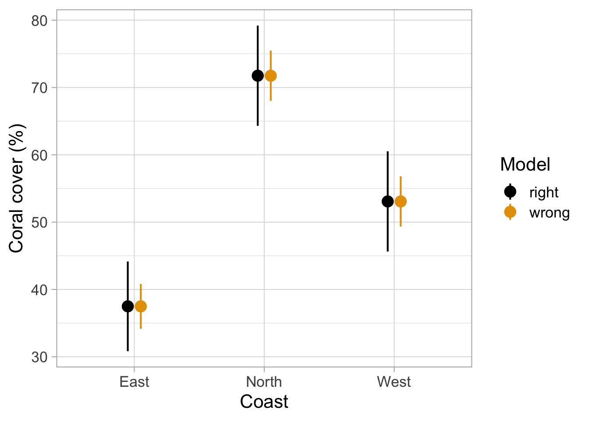
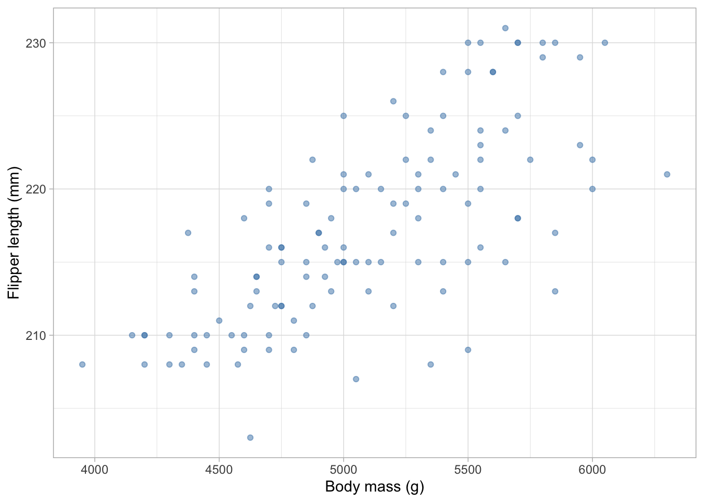
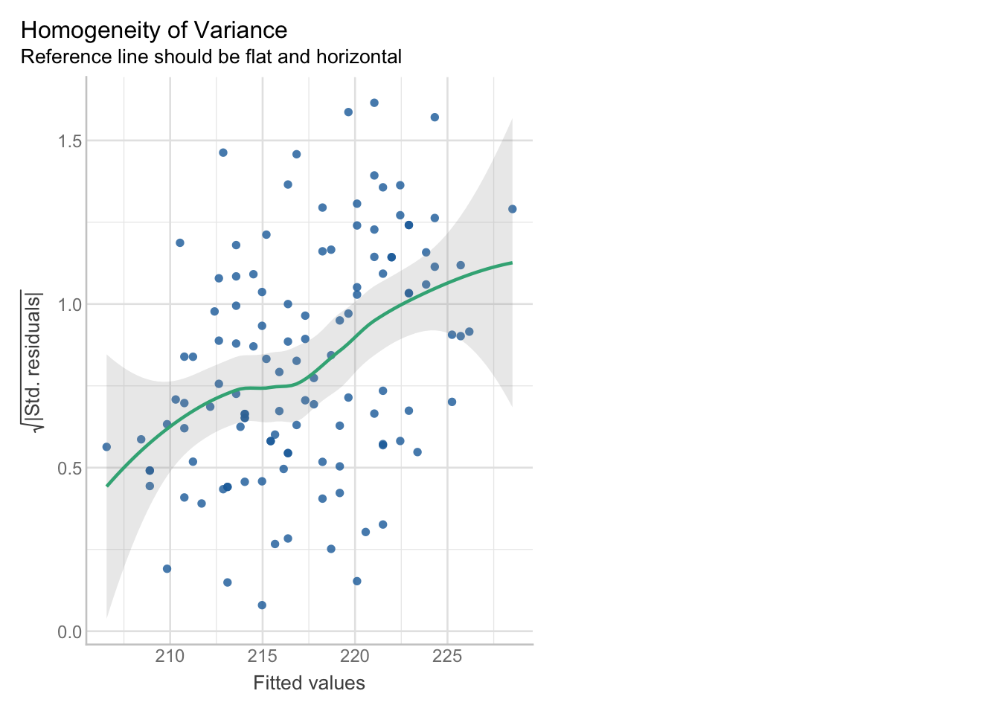
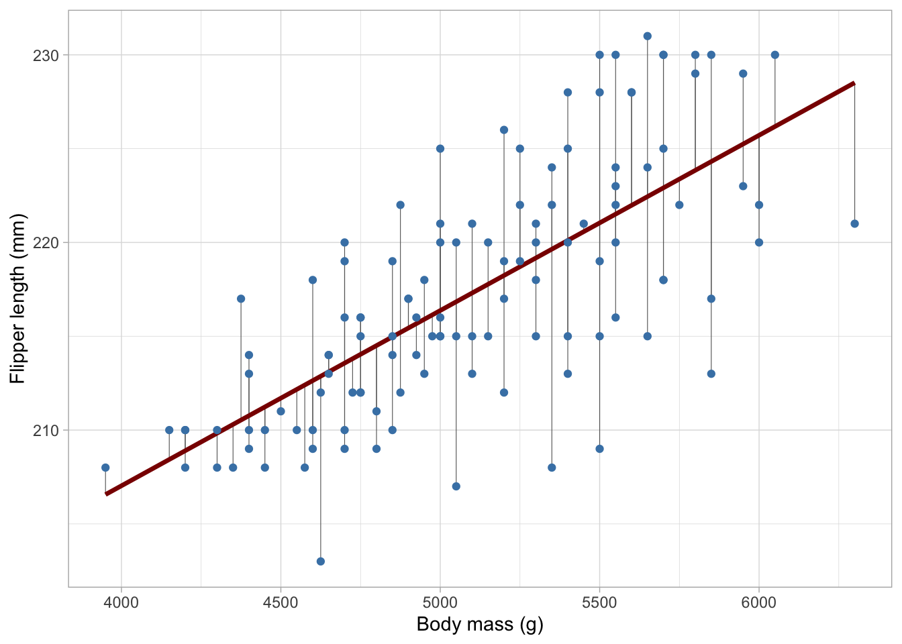
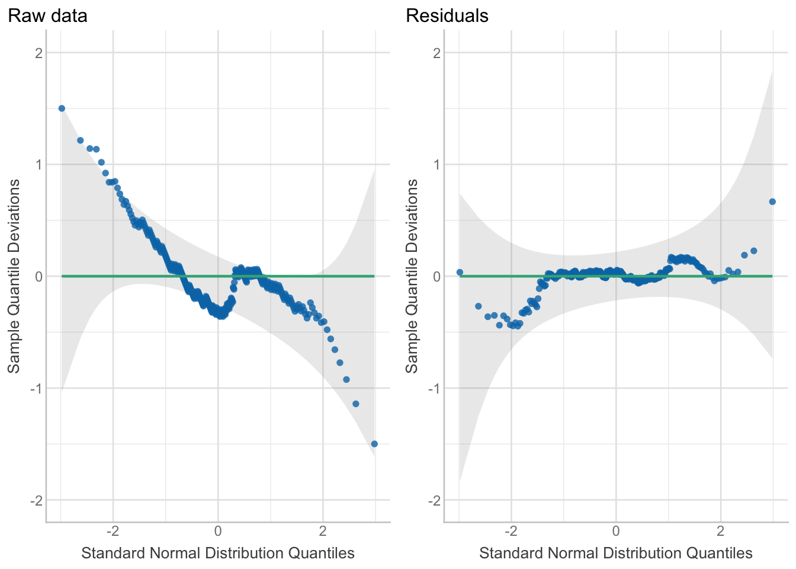
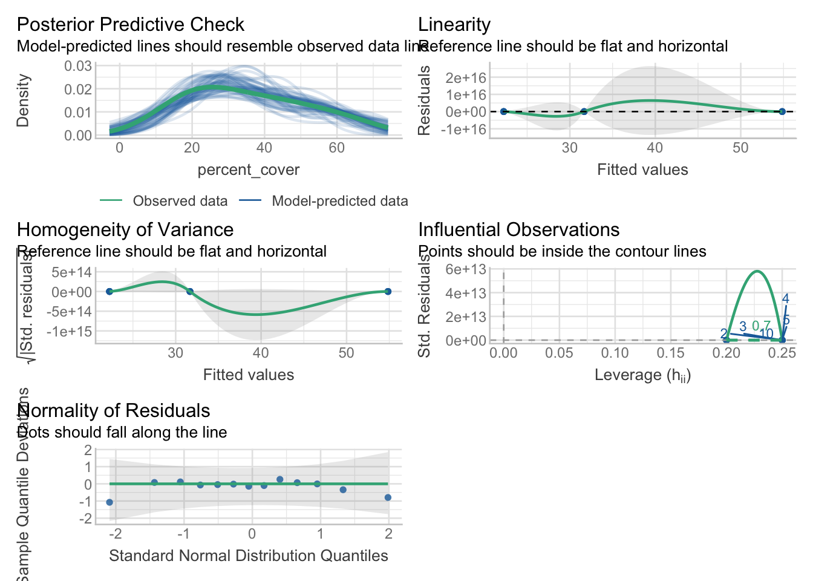
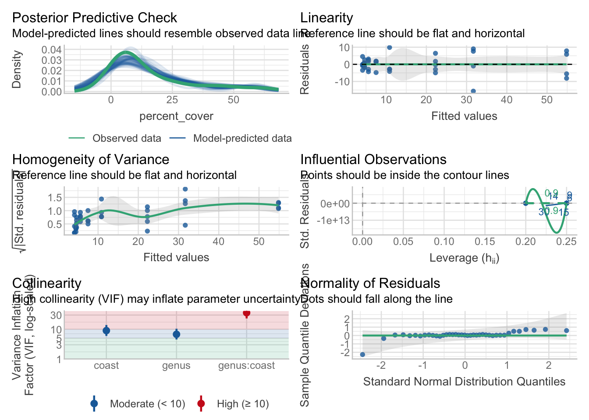
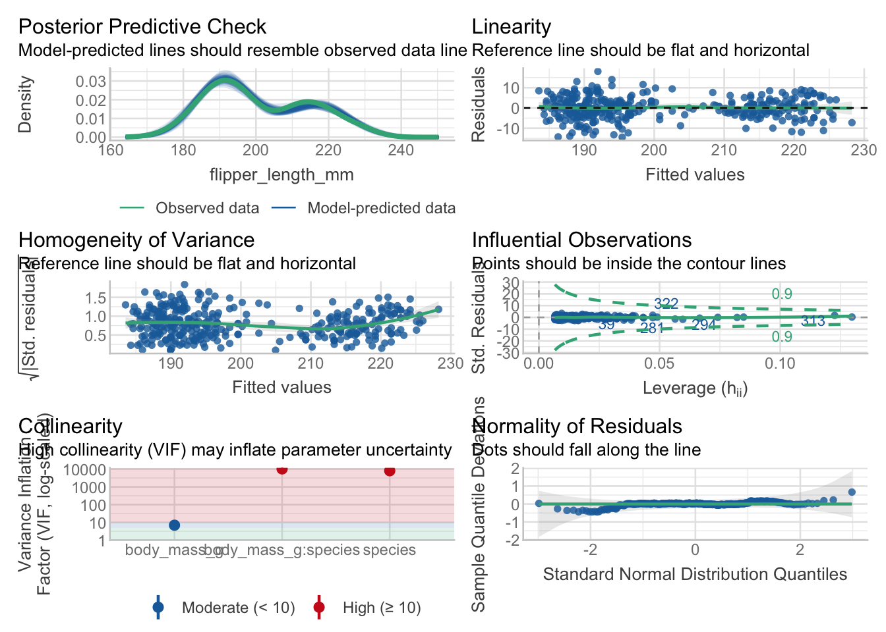

coral_transects <- read.csv(here("TP/TP_05/data/coral_cover_transects.csv"))Solution pour TP 05
2ème Partie : Hypothèses des modèles
Tout cela était amusant, mais jusqu’à présent, nous ne savons pas si les modèles sont « valides » et si les trois hypothèses principales sont respectées. Mais avant de vérifier les modèles que nous avons utilisés dans la partie 1, comprenons mieux ce que signifie chaque hypothèse.
Hypothèse 1 : Indépendance des observations
Le problème : Parfois, les données sont collectées de manière hiérarchique ou groupée. Par exemple, si vous mesurez la couverture corallienne sur 3 transects différents au sein de chaque site, ces 3 mesures au sein d’un site ne sont PAS indépendantes - elles sont plus similaires les unes aux autres qu’aux mesures d’autres sites parce que les conditions environnementales sont plus similaires au sein d’un site qu’entre différents sites. Si vous ignorez cette structure et traitez toutes les mesures comme indépendantes, vous violez une hypothèse critique. Cette pseudoréplication fait croire au modèle que les données sont meilleures ou plus claires qu’elles ne le sont en réalité.
Comparons ce que cela signifierait :
Tout d’abord, chargez les données brutes :
et créez un modèle ignorant la structure hiérarchique des données :
m_wrong <- lm(percent_cover ~ coast, data = coral_transects)Nous savons déjà que c’est la mauvaise approche. Pour créer un modèle plus honnête, nous devons calculer la moyenne de la couverture corallienne par site (c’est-à-dire la moyenne sur les trois transects qui ont été effectués par site). Vous avez appris comment faire cela dans le premier TP !
Tâche 1
Dans le code ci-dessous, regroupez les données par site et coast et calculez la moyenne de la colonne percent_cover :
coral_by_site <- coral_transects %>%
group_by(site, coast) %>%
summarise(percent_cover = mean(percent_cover))`summarise()` has grouped output by 'site'. You can override using the
`.groups` argument.m_right <- lm(percent_cover ~ coast, data = coral_by_site)Comparez les valeurs p :
anova(m_wrong)Analysis of Variance Table
Response: percent_cover
Df Sum Sq Mean Sq F value Pr(>F)
coast 2 7824.5 3912.3 96.527 3.424e-15 ***
Residuals 36 1459.1 40.5
---
Signif. codes: 0 '***' 0.001 '**' 0.01 '*' 0.05 '.' 0.1 ' ' 1anova(m_right)Analysis of Variance Table
Response: percent_cover
Df Sum Sq Mean Sq F value Pr(>F)
coast 2 2608.17 1304.09 29.219 6.661e-05 ***
Residuals 10 446.31 44.63
---
Signif. codes: 0 '***' 0.001 '**' 0.01 '*' 0.05 '.' 0.1 ' ' 1
NoteSolution
Regardez les valeurs p dans la sortie ANOVA : - m_wrong montre probablement une valeur p beaucoup plus petite (plus « significative ») - m_right montre une valeur p plus grande (peut-être pas significative)
Pourquoi ? Parce que m_wrong traite chaque transect comme indépendant, gonflant artificiellement la taille de l’échantillon de 13 sites à 39 mesures. Cela donne au modèle un faux sentiment de confiance et réduit la valeur p.
m_right reconnaît correctement que vous n’avez que 13 sites indépendants, pas 39 mesures. C’est l’approche honnête !
Tâche 2
Que remarquez-vous ?
Essayez de répondre d’abord vous-même, puis consultez le fichier d’aide.
Ci-dessous, je trace les deux estimations du modèle avec des IC :
bind_rows(
m_wrong %>%
estimate_means() %>%
mutate(model = "wrong"),
m_right %>%
estimate_means() %>%
mutate(model = "right")
) %>%
tibble() %>%
ggplot(aes(x = coast, y = Mean, col = model, ymin = CI_low, ymax = CI_high)) +
geom_pointrange(position = position_dodge(width = .2)) +
labs(x = "Coast", y = "Coral cover (%)", col = "Model") +
theme_light(base_size = 16) +
scale_color_colorblind()We selected `by=c("coast")`.
We selected `by=c("coast")`.
Tâche 3
Pourquoi pensez-vous que les IC dans m_wrong sont tellement plus petits que dans m_right ?
Essayez de répondre d’abord à la question vous-même, puis consultez le fichier d’aide pour ma réponse.
NoteSolution
Les intervalles de confiance (IC) dans m_wrong sont beaucoup plus étroits parce que :
- Taille d’échantillon gonflée : Le modèle pense qu’il a 39 observations indépendantes alors qu’il n’a réellement que 13 sites indépendants
- Variance sous-estimée : En ne tenant pas compte du regroupement des transects au sein des sites, le modèle sous-estime la vraie variabilité dans les données
- Fausse précision : Des IC plus étroits suggèrent des estimations plus précises, mais cette précision est illusoire
En revanche, m_right tient correctement compte du vrai nombre d’observations indépendantes (13 sites) et produit donc des intervalles de confiance plus larges et plus honnêtes qui reflètent l’incertitude réelle dans les données.
Leçon clé : La pseudoréplication conduit à une confiance excessive dans vos résultats !
Hypothèse 2 : Homogénéité de la variance (Homoscédasticité)
Le problème : Les modèles linéaires supposent que la dispersion des résidus (erreurs de prédiction) est à peu près la même partout. Mais parfois, la variabilité augmente avec la moyenne. Par exemple, les animaux plus grands montrent souvent plus de variation dans les mesures de longueur que les animaux plus petits.
Jetez un œil à la relation entre la masse corporelle et la longueur des nageoires pour les manchots Gentoo. Remarquez-vous que la variabilité pour les valeurs de longueur des nageoires augmente avec la masse corporelle ?
Voyons cela :

C’est l’hétéroscédasticité - la variance n’est pas constante sur toute la plage de la variable explicative.
De manière plus formelle, vous pouvez utiliser la fonction check_model(), elle montre cette violation plus clairement. Indice : check = "homogeneity" ne montre que le graphique pour évaluer l’homogénéité de la variance (aka “homoscédasticité”).
Tâche 4
Tout d’abord, créez un modèle avec flipper_length_mm comme variable réponse et body_mass_g comme variable explicative, puis tracez le graphique de variance :
m_gentoo <- lm(flipper_length_mm ~ body_mass_g, data = penguins_gentoo)
check_model(m_gentoo, check = "homogeneity")
La comparaison des deux graphiques (données brutes et ce graphique de variance) devrait vous aider à mieux comprendre la structure de la variance. Le graphique de variance montre la variabilité des résidus (différence entre la ligne du modèle et les valeurs brutes). Sur l’axe des x, vous voyez les valeurs prédites (ou ajustées), sur l’axe des y les résidus. Si globalement les valeurs des résidus augmentent le long de l’axe des x, vous savez que la variance augmente également !
Si vous reconsidérez la représentation formelle d’un tel modèle :
\[ \begin{align} \mathrm{y}_i \sim \mathrm{Normal(\mu}_i,~\mathrm{\sigma)} \\ \mu_i = a + b \cdot \mathrm{x}_i \end{align} \]
vous remarquez que le long de toute la ligne de régression (c’est-à-dire \(\mu_i = a + b \cdot \mathrm{x}_i\)), une seule valeur pour la variance est supposée. Si ce n’est pas vrai, comme ici, les valeurs p que le modèle estime ne sont pas vraies non plus !
La semaine prochaine, nous apprendrons une approche pour gérer cela !
Hypothèse 3 : Normalité des résidus (pas des données brutes !)
Beaucoup de gens pensent que la variable réponse (y) (c’est-à-dire « les données ») devrait être normalement distribuée. Mais ce sont les résidus qui devraient être normaux, pas les données brutes.
Que sont les résidus ?
Les résidus sont les différences entre vos valeurs observées et les valeurs prédites par votre modèle :
\[ \text{residual}_i = y_i - \hat{y}_i \]
Voici un rappel visuel, les résidus sont les lignes grises reliant les données brutes et la ligne de régression. Exécutez simplement le code et regardez le graphique, vous n’avez pas besoin de comprendre le code.
# Fit a model and show residuals visually
m_temp <- lm(flipper_length_mm ~ body_mass_g, data = penguins_gentoo)
# Create a data frame with fitted values (removes NAs automatically)
pred_data <- tibble(
body_mass_g = penguins_gentoo$body_mass_g,
flipper_length_mm = penguins_gentoo$flipper_length_mm,
fitted_vals = NA_real_
)
pred_data$fitted_vals[
!is.na(penguins_gentoo$body_mass_g) &
!is.na(penguins_gentoo$flipper_length_mm)
] <- fitted(m_temp)
ggplot(penguins_gentoo, aes(x = body_mass_g, y = flipper_length_mm)) +
geom_segment(
data = pred_data %>% filter(!is.na(fitted_vals)),
aes(
x = body_mass_g,
xend = body_mass_g,
y = flipper_length_mm,
yend = fitted_vals
),
color = "grey40",
linewidth = 0.2,
inherit.aes = FALSE
) +
geom_smooth(method = "lm", se = FALSE, color = "darkred", linewidth = 1.2) +
geom_point(color = "steelblue") +
labs(
x = "Body mass (g)",
y = "Flipper length (mm)"
) +
theme_light()`geom_smooth()` using formula = 'y ~ x'
Comparaison des données brutes vs résidus
Comparons la distribution des données brutes vs résidus. Exécutez simplement le code et regardez le graphique, vous n’avez pas besoin de comprendre le code.
# Create a temporary linear model just with the raw data for normality check
# (not for prediction—just to check the distribution of raw values)
m_raw <- lm(flipper_length_mm ~ 1, data = penguins)
# Plot 1: Normality check of raw data
p_raw <- check_normality(m_raw) %>%
plot() +
labs(title = "Raw data", subtitle = NULL) +
ylim(-2, 2)
m_peng <- lm(
flipper_length_mm ~ body_mass_g * species,
data = penguins
)
# Plot 2: Normality check of residuals from the fitted model
p_residuals <- check_normality(m_peng) %>%
plot() +
labs(title = "Residuals", subtitle = NULL) +
ylim(-2, 2)
# Compare side-by-side
grid.arrange(p_raw, p_residuals, ncol = 2)
Problèmes des données brutes : Le graphique Q-Q à gauche montre les données brutes s’écartant de la ligne, en particulier aux deux extrémités. Les données brutes ne sont pas normales.
Les résidus sont meilleurs : Le graphique Q-Q à droite montre que les résidus du modèle ajusté suivent beaucoup mieux la ligne. Beaucoup plus proches d’être normalement distribués et OK pour être utilisés dans un modèle.
Tâche 5
Vérifions maintenant les trois modèles de la Partie 1 :
m_pocim_coverm_ancova
Nous pouvons vérifier si toutes les hypothèses sont respectées en utilisant check_model() du package performance


m_ancova <- lm(flipper_length_mm ~ body_mass_g * species, data = penguins)
check_model(m_ancova)
Pour chaque modèle, évaluez si une hypothèse principale a été violée. Pensez-vous qu’il est correct d’utiliser le modèle ?
Essayez de répondre d’abord à la question vous-même, puis consultez le fichier d’aide pour ma réponse.
Voici une brève explication pour les différents sous-graphiques :
Vérification prédictive postérieure (En haut à gauche)
Ce qu’il montre : Compare vos données observées réelles (ligne verte) avec des données simulées à partir de votre modèle ajusté (lignes bleu clair).
Pourquoi c’est important : Si votre modèle est un bon ajustement, les données simulées devraient ressembler à ce que vous avez réellement observé. Si elles sont très différentes, votre modèle ne capture pas les vrais motifs.
Comment vérifier : La ligne observée devrait traverser le milieu de la plage de données simulées. Si elle est bien à l’écart sur le côté, quelque chose ne va pas avec votre modèle.
Pas trop important pour l’instant mais agréable pour vérifier la qualité du modèle
Linéarité (En haut à droite)
Ce qu’il montre : Trace les résidus (erreurs de prédiction) contre les valeurs ajustées pour vérifier si la relation est réellement linéaire.
Pourquoi c’est important : Les modèles linéaires supposent que la relation entre vos variables est une ligne droite. S’il y a une courbe ou un motif dans les résidus, l’hypothèse linéaire est violée.
Comment vérifier : Les points devraient se disperser aléatoirement autour d’une ligne horizontale à zéro. Si vous voyez une forme en U, en entonnoir ou tout motif évident, vous avez un problème.
Pas trop important pour l’instant
Homogénéité de la variance (Au milieu à gauche)
Ce qu’il montre : Résidus standardisés tracés contre les valeurs ajustées pour vérifier si la dispersion des erreurs est constante sur toutes les valeurs prédites.
Pourquoi c’est important : Les modèles linéaires supposent que les erreurs de prédiction sont également variables partout. Si les erreurs sont beaucoup plus grandes pour certaines prédictions que pour d’autres, vos estimations pourraient être peu fiables.
Comment vérifier : Les points devraient se disperser également autour de la ligne verte sur tout l’axe des x. Si la dispersion s’élargit (forme d’entonnoir) ou se rétrécit, il y a hétérogénéité.
Graphique important pour l’hypothèse 2 : Homogénéité
Observations influentes (Au milieu à droite)
Ce qu’il montre : Identifie les points qui ont une influence inhabituelle sur votre modèle—ils sont soit extrêmes soit ont des résidus extrêmes.
Pourquoi c’est important : Quelques valeurs aberrantes peuvent tirer de manière disproportionnée votre ligne ajustée. Vous devez savoir si vos résultats dépendent d’une poignée de points étranges.
Comment vérifier : La plupart des points devraient être à l’intérieur des lignes de contour en pointillés. Les points à l’extérieur des contours (étiquetés avec leur numéro de ligne) valent la peine d’être examinés - vérifiez s’il s’agit d’erreurs de saisie de données ou de cas véritablement intéressants.
Pas trop important pour l’instant
Colinéarité (En bas à gauche)
Ce qu’il montre : Facteur d’inflation de la variance (VIF) pour chaque prédicteur - mesure à quel point la variance d’une variable est gonflée parce qu’elle est corrélée avec d’autres prédicteurs.
Pourquoi c’est important : La colinéarité rend difficile l’estimation des effets individuels. Si deux prédicteurs sont fortement corrélés, vous ne pouvez pas dire lequel est réellement à l’origine des changements.
Comment vérifier :
- Zone verte (VIF < 10) : Pas de problème
- Zone jaune (VIF 5-10) : Préoccupation mineure
- Zone rouge (VIF > 10) : Colinéarité sérieuse - envisagez de supprimer l’une des variables corrélées
Pas trop important pour l’instant
Normalité des résidus (En bas à droite)
Ce qu’il montre : Graphique Q-Q comparant vos résidus à une distribution normale théorique.
Pourquoi c’est important : Les modèles linéaires supposent que les résidus sont normalement distribués. Les violations peuvent affecter les intervalles de confiance et les valeurs p.
Comment vérifier : Les points devraient tomber le long de la ligne.
- Légère dispersion autour de la ligne = correct (les distributions normales ne sont pas parfaites dans les petits échantillons)
- Déviations importantes aux extrémités = les résidus ne sont pas normaux
- Motif en forme de S ou courbé = indique une asymétrie ou des queues lourdes
Graphique important pour l’hypothèse 3 : Normalité
NoteSolution
Tous les modèles peuvent être utilisés, mais les résidus dans m_gentoo sont à la limite de ne pas être distribués normalement.